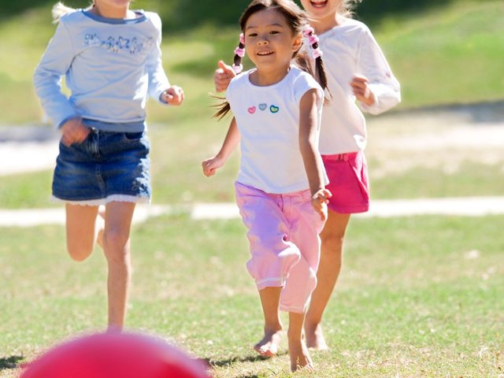
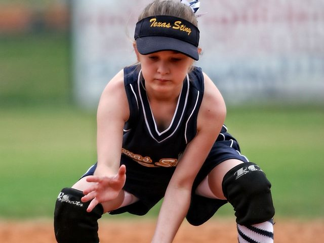
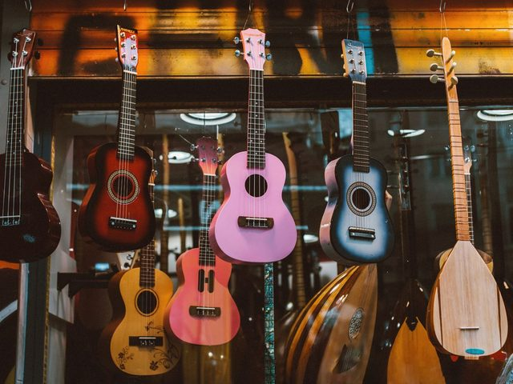

VOCABULARY · 主題 2000 字 PART 2 UNIT 14
Sports, interests & hobbies．運動、興趣與嗜好
球類、戶外活動、音樂、休閒嗜好，共 30 個。球類用 play（play golf），活動用 go + V-ing（go bowling、go skiing），樂器用 play the（play the flute）。
共 30 個單字．點 🔊 聽發音

1balln.
球；舞會
a costume ball 化裝舞會
The dog ran after the ball.那隻狗追著球跑。
2dodgeballn.
躲避球
play dodgeball
We played dodgeball in P.E. class today.我們今天體育課玩躲避球。

3footballn.
美式足球；（英式）足球
美國說 football 指美式足球
American football players wear helmets.美式足球員戴頭盔。

4frisbeen.
飛盤
play frisbee
My dog can catch a frisbee in the air.我的狗能在空中接住飛盤。

5golfn.
高爾夫球
play golf
Grandpa plays golf every Saturday.爺爺每個星期六打高爾夫球。

6softballn.
壘球
play softball
Softball is like baseball, but the ball is bigger.壘球很像棒球，但球比較大。

7table tennisn.
乒乓球；桌球
= ping-pong
Let's play table tennis after school.放學後我們來打桌球吧。
8volleyballn.
排球
play volleyball
We play beach volleyball in summer.我們夏天打沙灘排球。

9barbecuen. / v.
烤肉
= BBQ；have a barbecue
Many families have a barbecue at the Moon Festival.很多家庭中秋節烤肉。

10bowlingn.
保齡球
go bowling
We went bowling on Friday night.我們星期五晚上去打保齡球。

11roller skatev. / n.
溜輪式溜冰；輪式溜冰鞋
go roller skating
The kids roller skate in the park.孩子們在公園溜輪式溜冰。
12sailingn.
航行；帆船運動
go sailing
We went sailing on the lake last summer.去年夏天我們去湖上玩帆船。

13skatev. / n.
溜冰；溜冰鞋
go skating；ice skates 冰刀鞋
Can you skate on ice?你會溜冰嗎？

14skiv. / n.
滑雪；滑雪板
go skiing
We went skiing in Japan last winter.我們去年冬天去日本滑雪。

15travelv. / n.
旅行
travel → traveled／travelling
I want to travel around the world.我想環遊世界。

16cartoonn.
卡通；漫畫
watch cartoons
My little brother watches cartoons on Saturday mornings.我弟弟星期六早上看卡通。

17chessn.
西洋棋
不可數；play chess
Grandpa taught me how to play chess.爺爺教我下西洋棋。

18computer gamen.
電腦遊戲
play computer games
Don't play computer games for too long.不要玩電腦遊戲太久。

19draman.
戲劇；戲劇性事件
drama club 戲劇社
I joined the drama club this year.我今年加入了戲劇社。

20filmn.
電影；底片
= movie
This film is about a brave girl.這部電影在講一個勇敢的女孩。
21fluten.
長笛；笛子
play the flute
She plays the flute in the school band.她在學校樂隊吹長笛。

22instrumentn.
樂器；儀器
musical instrument 樂器
Can you play any musical instruments?你會彈奏任何樂器嗎？

23jazzn.
爵士樂
不可數
The café plays soft jazz music.那家咖啡館播放輕柔的爵士樂。

24noveln.
小說
novelist 小說家
Harry Potter is a famous novel series.《哈利波特》是有名的系列小說。

25pop musicn.
流行音樂
pop = popular
Many teenagers like Korean pop music.很多青少年喜歡韓國流行音樂。
26puzzlen. / v.
拼圖；謎題；使困惑
jigsaw puzzle 拼圖；puzzled 困惑的
We finished a 1,000-piece puzzle together.我們一起完成了一千片的拼圖。

27tentn.
帳篷
put up a tent 搭帳篷
We put up a tent by the river.我們在河邊搭了帳篷。
28trumpetn.
小號；喇叭
play the trumpet
He plays the trumpet very loudly.他小號吹得很大聲。

29losern.
輸家；失敗者
lose → loser
Don't be a bad loser. Say "Good game!"不要輸不起，說聲「打得好！」。

30winnern.
贏家；優勝者
win → winner（重複 n）
The winner of the race gets a gold medal.賽跑的優勝者得到金牌。
FOCUS
play、go、play the
| 用法 | 例子 |
|---|---|
| play + 球類 | play golf／volleyball／dodgeball |
| go + V-ing | go bowling／skiing／sailing |
| play the + 樂器 | play the flute／trumpet |
| play + 棋、遊戲 | play chess／computer games |
球類和棋類前面不加 the；樂器前面要加 the。